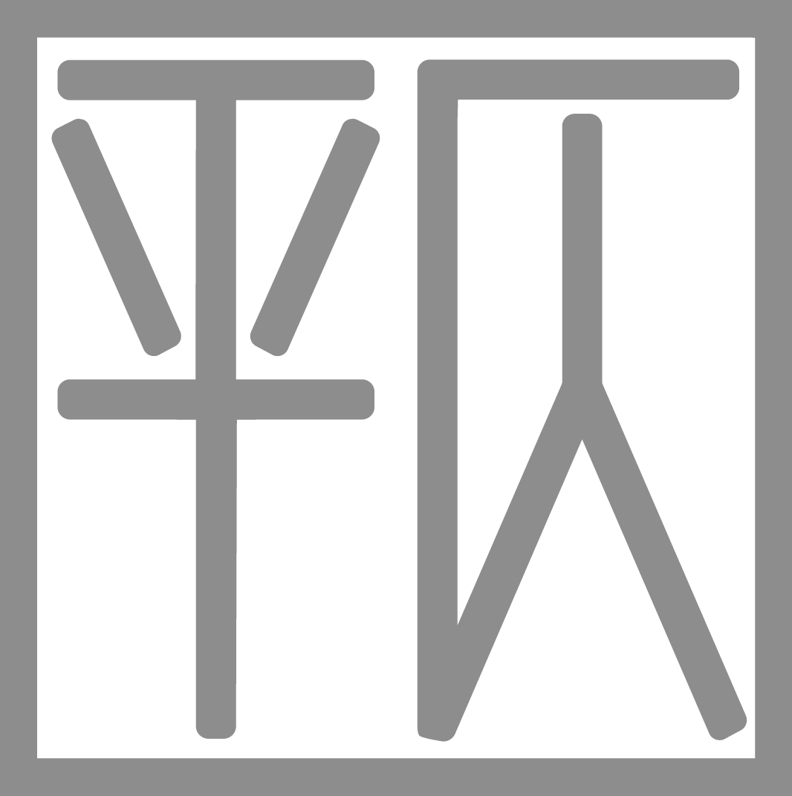

COLOR YOUR LIFE
招聘
前端开发
【职位描述】
－－负责日常安全类内容的撰写、收集，每周需要输出多篇内容在不同平台发布。
－－按照相关要求，与监管部门的对接、合作，保持密切的沟通联系，建立并维护良好的合作关系。
－－新媒体、各类官方账号的运营、用户的精准触达。
职位诱惑 : 福利好 扁平化管理 弹性工作时间 团队有爱
【职位要求】
－－本科以上学历，熟悉互联网金融业务；
－－文字能力佳，擅长使用新媒体语言，紧跟社会热点；
－－多任务统筹规划能力；
－－有运营、媒体、安全相关工作背景优先。
－－会简单ps、视频剪辑等软件的优先。
联系地址：
hr@chafou.com